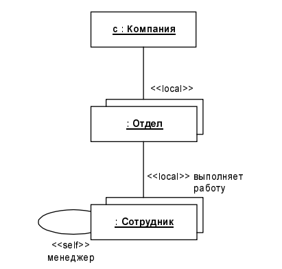

Отношение композиции является частным случаем отношения агрегации. Это отношение служит для спецификации более сильной формы отношения "часть-целое", при которой составляющие части тесно взаимосвязаны с целым. Специфика этой взаимосвязи заключается в том, что части не могут выступать в отрыве от целого, т. е. с уничтожением целого уничтожаются и все его составные части.
Графически отношение композиции изображается сплошной линией, один из концов которой представляет собой закрашенный внутри ромб. Этот ромб указывает на тот из классов, который представляет собой класс-композит. Остальные классы являются его "частями".
Возможно, самый наглядный пример этого отношения представляет собой живая клетка в биологии, в отрыве от которой не могут существовать ее составные части. Другой пример - окно графического интерфейса программы, которое может состоять из строки заголовка, кнопок управления размером, полос прокрутки, главного меню, рабочей области и строки состояния.
Нетрудно заключить, что подобное окно представляет собой класс, а его элементы могут являться как классами, так и атрибутами или свойствами этого окна. Последнее обстоятельство весьма характерно для отношения композиции, поскольку отражает различные способы представления данного отношения.
Для отношений композиции и агрегации могут использоваться дополнительные обозначения, применяемые для отношения ассоциации. А именно могут указываться кратности отдельных классов, которые в общем случае не являются обязательными. Применительно к описанному выше примеру класс Окно программы является классом-композитом, а взаимосвязи составляющих его частей могут быть изображены следующей диаграммой классов.
Отношение зависимости было рассмотрено ранее (см. главу 4) и в общем случае указывает некоторое семантическое отношение между двумя элементами модели или двумя множествами таких элементов, которое не является отношением ассоциации, обобщения или реализации. Оно касается только самих элементов модели и не требует множества отдельных примеров для пояснения своего смысла. Отношение зависимости используется в такой ситуации, когда некоторое изменение одного элемента модели может потребовать изменения другого зависящего от него элемента модели.
Отношение зависимости графически изображается пунктирной линией между соответствующими элементами со стрелкой на одном из ее концов. На диаграмме классов данное отношение связывает отдельные классы между собой, при этом стрелка направлена от класса-клиента зависимости или зависимого класса к классу-источнику или независимому классу.
Наиболее часто в качестве классов-клиентов и классов-источников зависимости могут выступать целые множества классов, организованные в пакеты. В этом случае стрелка должна быть направлена от пакета-клиента зависимости или зависимого пакета к пакету-источнику или независимому пакету.
Наличие у зависимости дополнительного стереотипа "access" служит для обозначения доступности открытых атрибутов и операций классов.
Стрелка зависимости может помечаться и другими необязательными, но стандартными ключевыми словами в кавычках. Для отношения зависимости в спецификации языка UML определены стереотипы для специальных случаев зависимостей. Эти стереотипы записываются рядом со стрелкой, которая соответствует данной зависимости. Стандартные стереотипы, которые могут использоваться с отношением зависимости, перечислены ниже.
Как уже отмечалось ранее, одним из несомненных достоинств языка UML является наличие механизмов расширения, которые позволяют ввести в рассмотрение дополнительные графические обозначения, ориентированные для решения задач из определенной предметной области. При этом в самой документации на язык UML представлено два специальных примера подобных расширений: профиль для процесса разработки программного обеспечения (The UML Profile for Software Development Processes) и профиль ля бизнec-моделирования (The UML Profile for Business Modeling).
В рамках первого из них предложено три специальных графических примитива, которые могут быть использованы для уточнения семантики отдельных классов при построении различных диаграмм.
В рамках второго профиля также предложено три специальных графических примитива, которые могут быть использованы для уточнения семантики отдельных классов при построении моделей бизнес-систем.
Интерфейс (interface) в контексте языка UML является специальным случаем класса, у которого имеются только операции и отсутствуют атрибуты. Для обозначения интерфейса используется специальный графический символ окружность или стандартный способ - прямоугольник класса со стереотипом "interface" (рис. 5.20).
На диаграмме вариантов использования интерфейс изображается в виде маленького круга, рядом с которым записывается его имя (рис. 5.20, а). В качестве имени может быть существительное, которое характеризует соответствующую информацию или сервис (например, "Датчик температуры", "Форма ввода", "Сирена", "Видеокамера") (рис. 5.20, б). С учетом языка реализации модели имя интерфейса, как и имена других классов, рекомендуется записывать на английском. В этом случае оно должно начинаться c заглавной буквы I, например, ItemperatureSensor, IsecureInformation.
Интерфейсы на диаграмме служат для спецификации таких элементов модели, которые видимы извне, но их внутренняя структура остается скрытой от клиентов. В языке UML интерфейс является классификатором и характеризует только ограниченную часть поведения моделируемой сущности. Применительно к диаграммам классов, интерфейсы определяют совокупность операций, которые обеспечивают необходимый набор сервисов или функциональности для актеров. Интерфейсы не могут содержать ни атрибутов, ни состояний, ни направленных ассоциаций. Они содержат только операции без указания особенностей их реализации. Формально интерфейс эквивалентен абстрактному классу без атрибутов и методов с наличием только абстрактных операций.
С системно-аналитической точки зрения интерфейс не только отделяет спецификацию операций системы от их реализации, но и определяет общие границы проектируемой системы. В последующем интерфейс может быть уточнен явным указанием тех операций, которые специфицируют отдельный аспект поведения системы. Графическое изображение интерфейсов в форме окружности может использоваться и на других типах канонических диаграмм, например, диаграммах развертывания и диаграммах вариантов использования.
Важность интерфейсов заключается в том, что они определяют стыковочные узлы в проектируемой системе, что совершенно необходимо для организации коллективной работы над проектом. Более того, спецификация интерфейсов способствует "безболезненной" модификации уже существующей системы при переходе на новые технологические решения. В этом случае изменению подвергается только реализация операций, но никак не функциональность самой системы. А это обеспечивает совместимость последующих версий программ с первоначальными при спиральной технологии разработки программных систем.
Шаблон (template) или параметризованный класс (parametrized class) предназначен для обозначения такого класса, который в своем описании имеет несколько формальных параметров. Он определяет целое семейство или множество классов, каждый из которых может быть получен связыванием этих параметров с действительными значениями. Обычно параметрами шаблонов служат типы атрибутов классов, такие как целые числа, перечисление, массив строк и другие. В более сложном случае формальные параметры могут представлять и операции класса.
Графически шаблон изображается прямоугольником класса, на верхний правый угол которого наложен маленький прямоугольник из пунктирных линий. Основной прямоугольник может быть разделен на секции, аналогично обозначению для класса. В верхнем прямоугольнике указывается список формальных параметров для тех классов, которые могут быть получены на основе данного шаблона. В верхней секции самого шаблона записывается его имя по правилам записи имен для классов.
Шаблон не может быть непосредственно использован в качестве класса, поскольку содержит неопределенные параметры. Чаще всего в качестве шаблона выступает некоторый суперкласс, параметры которого уточняются в производных классах. В этом случае между ними существует некоторая взаимосвязь, которая в языке UML называется отношением реализации.
Это отношение изображается пунктирной линией со стрелкой в форме треугольника, возможно с дополнительным стереотипом "bind".
Эта взаимосвязь означает, что класс-клиент может использовать некоторый шаблон для своей последующей параметризации. Приведенный пример отражает тот факт, что класс Адрес может быть получен из шаблона "Связный Список" на основе замены формальных параметров "S, k, 1" фактическими параметрами "улица, дом, квартира".
С другой стороны, этот же шаблон может использоваться для задания (инстанцирования) другого класса, скажем, класса Точки На Плоскости. В этом случае класс Точки На Плоскости актуализирует те же формальные параметры, но с другими значениями, например, "координаты Точки, х, у".
Концепция шаблонов является достаточно мощным средством в ООП, и поэтому ее использование в языке UML позволяет не только сократить размеры диаграмм моделей программных систем, но и наиболее корректно управлять наследованием свойств и поведения отдельных элементов модели.
Продолжая построение модели сквозного примера модели системы управления банкоматом, построим соответствующую диаграмму классов. Вообще говоря, подобная диаграмма классов может быть разработана различным образом, что отражает субъективный характер собственно разработчика на отдельные аспекты реализации модели. Один из возможных вариантов диаграммы классов для данного примера изображен.
Данная диаграмма содержит 6 классов, 4 из которых представлены в форме граничных классов, 1 как управляющий класс и 1 - как класс-интерфейс. Поскольку класс контроллер Банка не является предметом разработки, а только лишь предоставляет часть своих операций в качестве сервиса, он может быть представлен в форме интерфейса, т. е. со стереотипом <>. Что касается состава операций классов и их видимостей, то их выбор определяется исходя из возможной программной реализации данной модели.
Изображенная диаграмма классов является предварительной статической моделью системы управления банкоматом и может уточняться на последующих этапах работы над проектом. В частности, может потребоваться изменить состав операций отдельных классов или их видимость, ввести дополнительные атрибуты или более детально расписать сигнатуру операций. Все эти действия предлагается выполнить читателям самостоятельно в качестве упражнения.
Процесс разработки диаграммы классов занимает центральное место при разработке проектов сложных систем. От умения правильно выбрать классы и установить между ними взаимосвязи часто зависит не только успех процесса проектирования, но и производительность выполнения программы. Как показывает практика ООП, каждый программист в своей работе стремится в той или иной степени использовать уже накопленный личный опыт при разработке новых проектов. Это обусловлено желанием свести новую задачу к уже решенным, чтобы иметь возможность использовать не только проверенные фрагменты программного кода, но и отдельные компоненты в целом (библиотеки компонентов).
Такой стереотипный подход позволяет существенно сократить сроки реализации проекта, однако приемлем лишь в том случае, когда новый проект концептуально и технологически не слишком отличается от предыдущих. В противном случае платой за сокращение сроков проекта может стать его реализация на устаревшей технологической базе. Что касается собственно объектной структуризации при построении модели предметной области, то здесь уместно придерживаться тех рекомендаций, которые накоплены в ООП. Они широко освещены в литературе и поэтому здесь не рассматриваются.
При определении классов, атрибутов и операций и задании их имен и типов перед отечественными разработчиками всегда встает невольный вопрос: какой из языков использовать в качестве естественного - русский или английский? С одной стороны, использование родного языка для описания модели является наиболее естественным способом ее представления и в наибольшей степени отражает коммуникативную функцию модели системы. С другой стороны, разработка модели является лишь одним из этапов разработки соответствующей системы, а применение инструментальных средств для ее реализации в абсолютном большинстве случаев требует использования англоязычных терминов. Именно поэтому возникает характерная неоднозначность, с которой, по-видимому, совершенно незнакома англоязычная аудитория.
Отвечая на поставленный выше вопрос, следует отметить, что наиболее целесообразно придерживаться следующих рекомендаций. При построении диаграммы вариантов использования, являющейся наиболее общей концептуальной моделью проектируемой системы, применение русскоязычных терминов является не только оправданным с точки зрения описания структуры предметной области, но и эффективным с точки зрения коммуникативного взаимодействия с заказчиком и пользователями. При построении остальных типов диаграмм следует придерживаться разумного компромисса.
В частности, на начальных этапах разработки диаграмм целесообразно использовать русскоязычные термины, что вполне очевидно и оправданно. Однако, по мере готовности графической модели для реализации в виде программной системы и передачи ее для дальнейшей работы программистам, акцент может смещаться в сторону использования англоязычных терминов, которые в той или иной степени отражают особенности языка программирования, на котором предполагается реализация данной модели.
Использование CASE-средств для автоматизации ООАП, чаще всего, накладывает свои собственные требования на язык спецификации моделей. В частности, отдельные инструменты могут не иметь корректного отображения символов кириллицы. Именно по этой причине большинство примеров в литературе даются в англоязычном представлении, а при их переводе на русский может быть утрачена не только точность формулировок, но и семантика соответствующих понятий.
При разработке диаграмм классов существенную помощь могут оказать получившие широкое освещение в литературе паттерны и антипаттерны анализа и проектирования, которые обобщают положительный (соответственно, отрицательный) опыт специалистов на основе уже выполненных проектов.
После разработки диаграммы классов процесс ООАП может быть продолжен в двух направлениях. С одной стороны, если поведение системы тривиально, то можно приступить к разработке диаграмм кооперации и последовательности. К изучению особенностей построения диаграмм кооперации мы и приступим в следующей главе. Однако для сложных динамических систем, в частности для параллельных систем и систем реального времени, важнейшим аспектам их функционирования является поведение. Особенности поведения таких систем могут быть представлены на диаграммах состояний и деятельности, разработка которых в общем случае не является обязательной, а определяется спецификой разрабатываемого проекта.
В заключение приводится сводка всех рассмотренных графических обозначений, которые могут встретиться при построении диаграмм вариантов использования (табл. 5.1). Хотя в языке UML имеются некоторые другие элементы, данного перечня может оказаться вполне достаточно для выполнения большинства реальных проектов.
Диаграмма классов представляет собой логическую модель статического представления моделируемой системы. Действительно, на данной диаграмме могут быть изображены только взаимосвязи структурного характера между классами, не зависящие от времени или реакции системы на внешние события. Однако различные составные элементы систем не существуют изолированно, а оказывают определенное влияние друг от друга, что и отличает систему как целостное образование от простой совокупности элементов.
В языке UML взаимодействие элементов рассматривается в информационном аспекте, т. е. объекты обмениваются между собой некоторой информацией. При этом информация передается в форме так называемых сообщений, играющих роль своеобразных стимулов. Другими словами, хотя сообщение и имеет информационное содержание, оно приобретает дополнительное свойство оказывать направленное влияние на своего получателя. Это полностью согласуется с принципами ООАП, когда любые виды информационного взаимодействия между элементами модели должны быть сведены к отправке и приему сообщений между ними.
Для моделирования взаимодействия объектов в языке UML используются соответствующие диаграммы взаимодействия. Говоря об этих диаграммах, имеют в виду два различных способа визуализации взаимодействия. Во-первых, можно рассматривать взаимодействие объектов в контексте статической структуры модели. В этом случае для представления структурных особенностей передачи и приема сообщений между объектами используется диаграмма кооперации. Этот вид канонических диаграмм является предметом рассмотрения настоящей главы.
Во-первых, можно рассматривать взаимодействие объектов в контексте статической структуры модели. В этом случае для представления структурных особенностей передачи и приема сообщений между объектами используется диаграмма кооперации. Этот вид канонических диаграмм является предметом рассмотрения настоящей главы.
Во-вторых, взаимодействие объектов можно рассматривать во времени, и тогда для представления временных особенностей передачи и приема сообщений между объектами используется диаграмма последовательности. Этот вид канонических диаграмм рассматривается в главе 7.
Рассматривая диаграммы взаимодействия, следует отметить, что диаграмма кооперации предназначена для спецификации структурных аспектов взаимодействия, а диаграмма последовательности служит для визуализации временных аспектов взаимодействия. В то же время характерной особенностью диаграммы кооперации является возможность графического представления не только необходимых структурных отношений между объектами, участвующими в этом взаимодействии, но также визуализация последовательности сообщений, описывающих собственно процесс динамического взаимодействия объектов.
Таким образом, на диаграмме кооперации поведение системы описывается на уровне отдельных объектов, которые обмениваются между собой сообщениями, чтобы достичь нужной цели или реализовать некоторый вариант использования. С точки зрения аналитика или архитектора системы важно представить в проекте структурные связи отдельных объектов между собой. Такое представление структуры модели как совокупности взаимодействующих объектов и обеспечивает диаграмма кооперации.
Понятие кооперации (collaboration) является одним из фундаментальных понятий в языке UML. Оно служит для обозначения множества взаимодействующих с определенной целью объектов в общем контексте моделируемой системы. Цель самой кооперации состоит в том, чтобы специфицировать особенности реализации отдельных вариантов использования или наиболее значимых операций в системе. Кооперация определяет структуру поведения системы в терминах взаимодействия участников этой кооперации.
Далее рассматриваются особенности изображения диаграмм кооперации для этих двух уровней представления.
Диаграмма кооперации уровня спецификации показывает роли, которые играют участвующие во взаимодействии элементы. Элементами кооперации на этом уровне являются множества объектов (классы) и множества связей (ассоциации), которые обозначают отдельные роли классификаторов и роли ассоциаций между участниками кооперации.
Кооперация на уровне спецификации изображается на диаграмме пунктирным эллипсом, внутри которого записывается имя этой кооперации. Такое представление кооперации может относиться к отдельному варианту использования и детализировать особенности его последующей реализации. Символ эллипса кооперации соединяется отрезками пунктирных линий с каждым из участников этой кооперации, в качестве которых могут выступать множество объектов или классы. Каждая из этих пунктирных линий помечается ролью (role) участника. Роли соответствуют именам элементов в контексте всей кооперации. Эти имена трактуются как параметры, которые ограничивают спецификацию элементов при любом их появлении в отдельных представлениях модели.
Множество объектов на диаграмме кооперации уровня спецификации обозначается прямоугольником класса, внутри которого записывается строка текста в следующем формате:
'/' "Имя роли классификатора":
"Имя классификатора"[','"Имя классификатора"]*
Имя роли классификатора указывает на роль в рассматриваемой кооперации, которую играет соответствующее множество объектов, созданных на базе класса Имя классификатора. Если роль, которую должны играть объекты, наследуется от нескольких классов, то все они должны быть указаны явно и разделены запятой. Имя классификатора, если это необходимо, может включать полный путь всех вложенных пакетов. При этом один пакет от другого отделяется двойным двоеточием "::". Если не возникает путаницы, можно ограничиться указанием только ближайшего из пакетов, которому принадлежит данный классификатор. Символ "*" применяется для указания возможности итеративного повторения имени классификатора.
Имя роли может быть опущено в том случае, если существует только одна роль в кооперациях, которую могут играть объекты, созданные на базе класса Имя классификатора, либо если оно с очевидностью следует из контекста диаграммы. В этом случае оно исключается из строки текста вместе с предшествующим ему символом "/".
Отдельные примеры изображения объектов с ролями объектов и именами классов на диаграммах кооперации уровня спецификации приводятся на рис. 6.2.
рисунок 6.2
Здесь в первом случае (рис. 6.2, а) обозначено множество объектов, играющих роль инициатор запроса, образуемых от класса с именем клиент. Далее (рис. 6.2, б) следует обозначение роли Обработчик запросов. В следующих вариантах записи (рис. 6.2, в, г) присутствует только имя класса клиент, при этом соответствующие роли не указаны. Последний случай характерен для ситуации, когда в модели могут присутствовать несколько классов с именем Клиент, поэтому требуется явно указать имя соответствующего пакета База данных (рис. 6.2, г). При этом имя пакета отделяется от имени класса двойным двоеточием.
Если кооперация допускает обобщенное представление, то на диаграммах могут быть указаны отношения обобщения соответствующих элементов. Этот способ может быть использован для определения отдельных коопераций, которые являются, в свою очередь, частным случаем или специализацией другой кооперации. Такая ситуация изображается обычной стрелкой обобщения, направленной от символа дочерней кооперации к символу кооперации-предка. При этом роли дочерних коопераций могут быть специализациями ролей коопераций-предков, как изображено на следующем рисунке (рис. 6.3).
В отдельных случаях возникает необходимость явно указать тот факт, что кооперация является реализацией некоторой операции классификатора.
Это можно представить одним из двух способов.
рисунок 6.3
Во-первых, можно соединить символ кооперации пунктирной линией со стрелкой с символом класса, реализацию операции которого специфицирует данная кооперация. Так, если в качестве класса рассмотреть ЗаказНаПокупкуТовара, у которого имеется операция оформить Заказ(), то ее реализация может быть специфицирована в форме кооперации (рис. 6.4, а).
Во-вторых, можно просто изобразить символ кооперации, внутри которого указать всю необходимую информацию, записанную по определенным правилам (рис. 6.4, б).
Представление кооперации на уровне спецификации используется на начальных этапах проектирования. В последующем каждая из коопераций подлежит детализации на уровне примеров (экземпляров), на котором раскрывается содержание и структура взаимосвязей ее элементов на отдельной диаграмме кооперации. При этом в качестве элементов диаграммы кооперации выступают объекты и связи, дополненные сообщениями. Именно эти элементы модели являются предметом дальнейшего рассмотрения в настоящей главе.
Диаграмма кооперации уровня примеров (instances) визуализирует объекты (экземпляры классов), связи (экземпляры ассоциаций) и сообщения. При этом связи дополняются стрелками сообщений. На этом уровне показываются только те объекты, которые имеют непосредственное отношение к реализации моделируемой кооперации. Поскольку эта разновидность нашла наибольшее применение при выполнении реальных проектов, в дальнейшем внимание сосредоточено на рассмотрении особенностей ее графического представления.
На диаграмме кооперации уровня примеров прежде всего изображаются участвующие во взаимодействии объекты. При этом вовсе не обязательно изображать объекты всех классов модели. Далее, как и на диаграмме классов, могут быть показаны структурные отношения между объектами в виде различных соединительных линий. При этом для связей можно явно указать имена ролей, которые играют объекты в данной взаимосвязи.
Важно помнить, что в то время как классификатор требует полного описания всех своих экземпляров, роль классификатора или объект требует описания только тех связей, которые необходимы для реализации отдельной кооперации. И, наконец, изображаются динамические взаимосвязи – потоки сообщений. Они представляются в форме стрелок с указанием направления рядом с соединительными линиями между объектами, при этом указываются имена сообщений и их порядковые номера в общей последовательности сообщений.
Отсюда вытекает важное следствие. Одна и та же совокупность объектов может участвовать в реализации различных коопераций. При этом, в зависимости от рассматриваемой кооперации, могут изменяться как связи между отдельными объектами, так и поток сообщений между ними. Именно это отличает диаграмму кооперации от диаграммы классов, на которой должны быть указаны все без исключения классы, их атрибуты и операции, а также все ассоциации и другие структурные отношения между элементами модели.
Ниже представлен начальный фрагмент диаграммы кооперации уровня примеров для модели телефонного разговора с использованием обычной телефонной сети (рис. 6.5). Объектами в этом примере являются: два абонента а и b, два телефонных аппарата c и d, коммутатор и сам разговор как объект моделирования. В данном случае абонентов целесообразно рассматривать как актеров, причем первый из них а - играет активную роль, а второй актер b- пассивную роль. Заметим также, что коммутатор и разговор являются анонимными объектами, причем телефонный аппарат с и коммутатор изображены как активные объекты, а телефонный аппарат d и разговор - как пассивные. Особенности изображения подобных объектов будут рассмотрены далее.
рисунок 6.5
Необходимость изображения взаимосвязей не только между множествами объектов (классами) модели, но и между отдельными объектами, реализующими эти классы, может возникнуть в силу самых различных причин. Наиболее важной из них является изображение реализации отдельного варианта использования модели. В ранних версиях языка UML для этой цели служила диаграмма объектов, которая в последующем была заменена канонической диаграммой кооперации. При этом основными элементами или графическими примитивами, из которых образуется остов или каркас диаграммы кооперации уровня примеров, являются объекты.
Объект (object) является отдельным экземпляром класса, который создается на этапе реализации модели (выполнения программы). Он может иметь свое собственное имя и конкретные значения атрибутов. Рассмотрим особенности семантики и графической нотации объектов, из которых строятся диаграммы кооперации на уровне примеров.
Для диаграмм кооперации уровня примеров полное имя объекта в целом представляет собой строку текста, разделенную двоеточием и записанную в формате:
'собственное имя объекта'/'Имя роли классификатора'
:"Имя классификатора" [',"Имя классификатора"]*
Здесь элементы Имя роли классификатора и Имя классификатора аналогичны рассмотренным выше, а вся запись имени объекта подчеркивается. Если указано собственное имя объекта, то оно должно начинаться со строчной буквы. В этом формате, как правило, имя роли классификатора записывается только при наличии собственного имени объекта на уровне примеров.
В отдельных случаях собственное имя объекта может отсутствовать. Такой объект принято называть анонимным, при этом обязательно записывается двоеточие перед именем соответствующего класса (рис. 6.6, в). Отсутствовать может и имя класса - такой объект называется сиротой. Для него записывается только собственное имя объекта, а двоеточие и имя класса не указываются (рис. 6.6, г). Если для объектов указываются атрибуты, то в большинстве случаев они принимают конкретные значения (рис. 6.6, б).
Для объектов на рис. 6.6, д, е дополнительно указаны роли, которые они играют в кооперации.
Таким образом, на диаграммах кооперации уровня примеров могут встретиться следующие варианты возможных записей имен объектов:
Мультиобъект (multiobject) представляет собой множество объектов, которые могут быть образованы на основе одного класса. На диаграмме кооперации уровня примеров мультиобъект используется для того, чтобы показать операции и сигналы, которые адресованы всему множеству объектов, а не только отдельному объекту. Мультиобъект изображается двумя прямоугольниками, один из которых выступает из-за верхней правой вершины другого (рис. 6.7, а). При этом стрелка взаимосвязи относится ко всему множеству объектов, которые обозначает данный мультиобъект. На диаграмме кооперации может быть явно указано отношение агрегации (композиции) между мультиобъектом и отдельным объектом из его множества (рис. 6.7, б).
рисунок 6.7
В контексте языка UML все объекты делятся на две категории: пассивные и активные.
Пассивный объект оперирует только данными и не может инициировать деятельность по управлению другими объектами. Однако пассивные объекты могут посылать сигналы в процессе выполнения запросов, которые они обрабатывают.
Активный объект (active object) имеет свой собственный поток управления (процесс) или нить (thread) и может инициировать деятельность по управлению другими объектами. При этом под нитью понимается некоторый облегченный поток управления (подпроцесс), который может выполняться параллельно с другими вычислительными нитями (подпроцессами) в пределах одного вычислительного процесса или потока управления.
Активные объекты на канонических диаграммах обозначаются прямоугольником с утолщенными границами (рис. 6.8). Иногда, чтобы явно выделить активный объект на диаграмме, может быть дополнительно указано ключевое слово (помеченное значение) {active}. Каждый активный объект является владельцем некоторого потока (процесса) управления или нити.
В приведенном фрагменте диаграммы (рис. 6.8) кооперации активный объект а : Абонент является инициатором процесса установления соединения (вызывающим абонентом) для обмена информацией с другим абонентом, который на данном фрагменте диаграммы не показан.
рисунок 6.8
В следующем примере рассматривается ситуация с вызовом функции печати из текстового редактора (рис. 6.9). Анонимный активный объект класса Текстовый редактор вначале посылает сообщение анонимному мультиобъекту класса принтер. Это сообщение инициирует выбор единственного объекта класса принтер, возможно, удовлетворяющего некоторым дополнительным условиям. После этого выбранному объекту посылается сообщение о необходимости напечатать документ, загруженный в текстовый редактор.
рисунок 6.9
Составной объект (composite object) или объект-композит предназначен для представления объекта, имеющего собственную структуру и внутренние потоки (нити) управления. Составной объект является экземпляром класса-композита, который связан отношением композиции (см. главу 5) со своими частями. Аналогичные отношения связывают между собой и соответствующие объекты.
На диаграммах кооперации такой составной объект изображается как обычный объект, состоящий из двух секций: верхней и нижней. В верхней секции записывается имя составного объекта, а в нижней – его объекты-части вместо списка его атрибутов (рис. 6.10). При этом допускается иметь в качестве частей другие составные объекты.
рисунок 6.10
Связь (link) является экземпляром или примером произвольной ассоциации. Связь как элемент языка UML может иметь место между двумя и более объектами. Бинарная связь на диаграмме кооперации изображается отрезком сплошной линии, соединяющей два прямоугольника объектов (см. рис. 6.8, 6.9). На каждом из концов этой линии дополнительно могут быть явно указаны имена ролей соответствующей ассоциации.
Связи не имеют собственных имен, поскольку полностью идентичны как экземпляры ассоциации. Другими словами, все связи на диаграмме кооперации могут быть только анонимными и при необходимости записываются без двоеточия перед именем ассоциации. Однако чаще всего имена связей (ассоциаций) на диаграммах кооперации не указываются. Для связей не указываются также и кратность концевых точек. Однако другие обозначения специальных случаев отношений (агрегация, композиция) могут присутствовать на отдельных концах связей. Например, символ связи типа агрегации между мультиобъектом класса принтер и отдельным объектом класса Принтер (рис. 6.9).
Некоторые примеры связей с различными стереотипами изображены на рис. 6.11. Здесь представлена обобщенная схема некоторой конкретной компании с именем с, которая состоит из отделов (анонимный мультиобъект класса Отдел). Последние, в свою очередь, состоят из сотрудников (анонимный мультиобъект класса Сотрудник). Рефлексивная связь указывает на тот факт, что менеджер отдела является в то же время и его сотрудником.
Как было отмечено выше, цель взаимодействия в контексте языка UML заключается в том, чтобы специфицировать коммуникацию между множеством взаимодействующих объектов. Каждое взаимодействие описывается совокупностью сообщений, которыми участвующие в нем объекты обмениваются между собой.
рисунок 6.11
Сообщение (message) на диаграмме кооперации специфицирует коммуникацию между двумя объектами, один из которых передает другому некоторую информацию. При этом первый объект предполагает, что после получения сообщения вторым объектом последует выполнение некоторого действия. Таким образом, именно сообщение является причиной или стимулом для начала выполнения операций, отправки сигналов, создания и уничтожения отдельных объектов. Связь обеспечивает канал для направленной передачи сообщений между объектами от объекта-источника к объекту-получателю.
В этом смысле сообщение представляет собой законченный фрагмент информации, который отправляется одним объектом другому. При этом прием сообщения может инициировать выполнение определенных действий, направленных на решение отдельной задачи тем объектом, которому это сообщение отправлено.
Таким образом, сообщения не только передают некоторую информацию, но и требуют или предполагают от принимающего объекта выполнения ожидаемых действий. Сообщения могут инициировать выполнение операций объектом соответствующего класса, а параметры этих операций передаются вместе с сообщением.
В таком контексте каждое сообщение имеет направление от объекта, который инициирует и отправляет сообщение, к объекту, который его получает. Иногда отправителя сообщения называют клиентом, а получателя - сервером. При этом сообщение от клиента имеет форму запроса некоторого сервиса, а реакция сервера на запрос после получения сообщения может быть связана с выполнением определенных действий или передачи клиенту необходимой информации тоже в форме сообщения.
Сообщения в языке UML также специфицируют роли, которые играют объекты - отправитель и получатель сообщения. Сообщения на диаграмме кооперации изображаются дополнительными стрелками рядом с соответствующей связью или ролью ассоциации. Направление стрелки указывает на получателя сообщения. Внешний вид стрелки сообщения имеет определенный смысл. На диаграммах кооперации может использоваться один из трех типов стрелок для обозначения сообщений (рис. 6.12).
рисунок 6.12
Рассмотрим каждый из этих элементов более подробно.
Предшествующие сообщения - это разделенные запятыми номера сообщений, записанные перед наклонной чертой:
'0 Номер сообщения' ',' * '/'
Если список номеров сообщений пуст, то вся запись, включая наклонную черту (слеш), опускается. Если номера сообщений указываются, то они должны соответствовать номерам других сообщений на этой же диаграмме кооперации.
Смысл указания предшествующих сообщений заключается в том, что данное сообщение не может быть передано, пока не будут переданы своим адресатам все сообщения, номера которых записаны в данном списке.
Пример записи предшествующих сообщений 3 и 4:
0 3, 4 / 5: ошибка Записи (сектор)
Выражение последовательности - это разделенный точками список отдельных термов последовательностей, после которого записывается двоеточие:
0 "Терм последовательности' .'…" ':'
Каждый из термов представляет отдельный уровень процедурной вложенности в форме законченной итерации. Наиболее верхний уровень соответствует самому левому терму последовательности. Если все потоки управления параллельные, то вложенность отсутствует.
Каждый из термов последовательности имеет следующий синтаксис:[Целое число | Имя ] [Рекуррентность ].
Целое число указывает на порядковый номер сообщения в процедурной последовательности верхнего уровня. Сообщения, номера которых отличаются на единицу, следуют подряд один за другим. Например, сообщение с номером "3.1.4" следует за сообщением с номером "3.1.3" в процедурной последовательности "3.1".